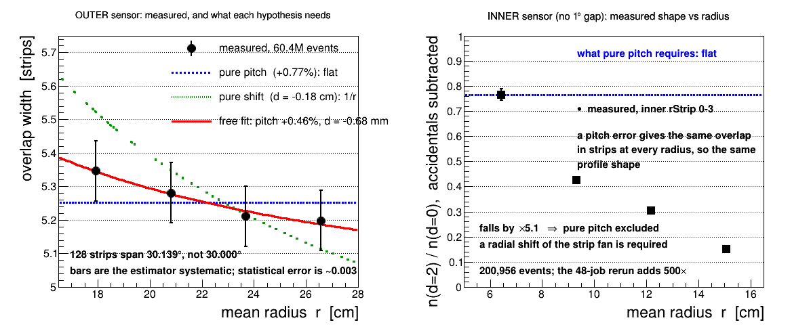

STAR forward upgrade, FST geometry and mapping — Outer sensor overlap | Geometry and mapping | FST cosmic channel map (PDF)
Adjacent FST wedges share a 1° band of silicon. A track crossing it fires both wedges, and which strips light up together says which end of a wedge carries strip 0 — the one thing a bench channel map cannot know, because it does not know which way the module faces once it is bolted on.
120 000 zero-field events settle it: the strip-phi sense our reconstruction uses is the installed one, by 50:1 over the mirrored alternative, and all 36 wedges agree.
Numbering. 1-based throughout, because that is what the code and the data use: StMuFstHit::getWedge() returns 1–36, getDisk() returns 1–3, and StFstDb::stripPhi rejects wedge < 1. Within a disk, m = 1 + (wedge−1)%12, so m runs 1–12 and wedge 1 (m=1) is the 60–90° one. The 0-based iwedgem in StFstDb exists only to index kFstzDirct and friends. This matters here: shifting by one flips the odd/even parity of m, and that parity is the front/back grouping. The older geometry page numbers wedges 0–11, so its wedge 0 is this page's wedge 1.
Everything below uses only the outer sensors and only wedges in the same disk.
|
| Disk 1, wedges 12, 1 and 2 as StFstDb::stripPhi has them — every angle in the figure is computed with that function's own formula, so the picture is the code's claim rather than a drawing of someone's idea of it (script/fstWedgeDrawing.C). A: the disk seen from the IR towards +z, where STAR +x points left and φ runs clockwise. B: unrolled, with the 1° gaps, the 1° overlaps and the strip directions; note the direction alternates wedge to wedge. C: the z section — inner silicon 1.7419 cm from the disk plane, outer 0.3469 cm, same side. D: the boundary itself, where both wedges have strips 0–3, interleaved. |
FRONT/BACK here follow the current kFstmAsInstalled default (wedge orientation = kFstzFilp × kFstzDirct, no leading minus), which makes odd m front on disks 1 and 3 and back on disk 2. The table on the older geometry page lists the pre-mirror sense, so the two pages label the same wedge oppositely.
For every outer hit in wedge W, record which neighbour edge also fired in the same event:
| y bin | condition |
|---|---|
| y0 | wedge W−1 (higher φ) had a hit in its strips 0–3 |
| y1 | wedge W−1 (higher φ) had a hit in its strips 124–127 |
| y2 | wedge W+1 (lower φ) had a hit in its strips 0–3 |
| y3 | wedge W+1 (lower φ) had a hit in its strips 124–127 |
Wedge index increases as φ decreases (wedge 1 is 60–90°, wedge 2 is 30–60°), so W+1 is the lower-φ neighbour and W−1 the higher-φ one, both taken mod 12 inside the disk.
No tracking, no geometry, no DB geometry call. Every quantity is a hardware index straight out of StMuFstHit: getDisk(), getWedge(), getSensor(), getMeanPhiStrip(). Three consequences:
Checked on the data before using it, not assumed:
The two hypotheses predict disjoint pairs of cells, so they are read straight off. Our mapping (P) puts the same-numbered edges of adjacent wedges against each other, because kFstzDirct = {1,−1,1,−1,...} alternates the strip direction; a physical mirror of that (M) is exactly y0↔y2 and y1↔y3.
| wedges | strips 0–3 pair with | strips 124–127 pair with |
|---|---|---|
| disks 1,3 odd m / disk 2 even m | y0 (W−1 s0–3) | y3 (W+1 s124–127) |
| disks 1,3 even m / disk 2 odd m | y2 (W+1 s0–3) | y1 (W−1 s124–127) |
120 000 zero-field events (Run 24 FieldOff, run24_mudst.txt), 113 491 with FST hits, 2 033 671 FST hits of which 811 072 outer, 16.95 hits/event.
| disk | wedges | hit end | y0: W−1 s0–3 | y1: W−1 s124–7 | y2: W+1 s0–3 | y3: W+1 s124–7 | edge hits |
|---|---|---|---|---|---|---|---|
| 1 | odd m | s0–3 | 2100 P | 58 | 47 M | 47 | 4325 |
| 1 | odd m | s124–127 | 49 | 38 M | 53 | 2250 P | 4053 |
| 1 | even m | s0–3 | 48 M | 52 | 2092 P | 49 | 4559 |
| 1 | even m | s124–127 | 46 | 2243 P | 58 | 38 M | 4410 |
| 2 | odd m | s0–3 | 59 M | 59 | 2402 P | 65 | 4943 |
| 2 | odd m | s124–127 | 59 | 2484 P | 57 | 49 M | 4908 |
| 2 | even m | s0–3 | 2419 P | 57 | 60 M | 59 | 4898 |
| 2 | even m | s124–127 | 66 | 50 M | 62 | 2499 P | 4921 |
| 3 | odd m | s0–3 | 1981 P | 48 | 35 M | 46 | 4320 |
| 3 | odd m | s124–127 | 60 | 44 M | 59 | 2462 P | 5002 |
| 3 | even m | s0–3 | 35 M | 59 | 1976 P | 58 | 4571 |
| 3 | even m | s124–127 | 46 | 2453 P | 49 | 44 M | 4535 |
| total | predicted cells P = 27361 mirrored cells M = 547 | ||||||
M is the accidental floor, not a small signal. In every row the two cells that are neither P nor M hold the same ~50 counts as M, and the strips 60–67 control gives the same rate: ~100 counts per cell on ~8 500 control hits = 1.2%, against M's 1.1%. The mirrored hypothesis has no signal at all.
A second result falls out for free: for every s0–3 row the two s124–127 cells are empty. Same-numbered edges meet, which only an alternating mounting can do — a uniform strip direction would have put every count in those now-empty cells.
 |
| Left: front wedges (orientation +1). Middle: back wedges. Right: all 36 together. Front wedges pair with W−1, back wedges with W+1, and the two mirrored rows are flat at the accidental level. The all-wedge average washes out to 50/50 by construction — the predicted cell alternates with the mounting sense, so only the front/back split carries the answer. |
Per wedge, all 36 agree: M/P runs 0.006 to 0.033 with no outlier, and the mirrored cell equals the accidental level everywhere. A single wedge wired the other way would have shown M ≈ P ≈ 350 in its own panel.
 |
| Disk 1, all twelve wedges separately. Odd wedges light the bottom row (W−1, higher φ), even wedges the row above it (W+1, lower φ), strictly alternating. Every other cell is single digits. |
Predicted-cell coincidences against distance from the wedge edge, summed over all 36 wedges:
| strip from edge | 0 | 1 | 2 | 3 | 4 | 5 | 6 | 7 | 8 |
|---|---|---|---|---|---|---|---|---|---|
| coincidences | 1654 | 3518 | 4160 | 3638 | 3054 | 1072 | 447 | 337 | 288 |
Signal through strip 4 and a 3× drop at strip 5 — the 4.27 strips the 1° band predicts, measured. The deficit at strip 0 is an edge-of-sensor clustering effect: the outermost strip's cluster is truncated, so its mean migrates inward.
Inside the band the two strip grids interleave, so each strip has a definite partner. Counts for my edge strip against the partner wedge's:
| mine \ partner | 0 | 1 | 2 | 3 |
|---|---|---|---|---|
| s0 | 156 | 162 | 251 | 346 |
| s1 | 146 | 214 | 314 | 1186 |
| s2 | 242 | 315 | 1277 | 320 |
| s3 | 317 | 1107 | 316 | 85 |
The pairing is sharp and reversed, as it must be when the strip directions alternate. But it sits one strip off the nominal prediction: stripPhi gives partner sum = 3.27 (w1 s0 ↔ w12 s3, 0.063° apart), the data peaks at sum = 4 with a centroid near 3.8–4.0. That is a 0.5–0.75 strip (2–3 mrad) wedge-to-wedge relative offset from nominal.
This cannot be wedge alignment. A boundary offset is a difference δm − δm+1 of per-wedge rotations, and around a disk those sum to zero: any set of rigid wedge rotations cancels exactly out of an average over all boundaries, which is what this number is. A coherent shift of every boundary has to come from a parameter common to all of them — the gap, or the pitch. Both reproduce it, because both move the same combination:
| geometry | j+k | outer overlap |
|---|---|---|
| nominal (gap 1.000°, pitch 30/128) | 3.27 | 4.27 strips |
| (a) gap 1.172°, pitch nominal | 4.00 | 5.00 strips |
| (b) pitch ×1.006, gap nominal | 4.00 | 5.00 strips |
j+k = 127 + (gap−30)/pitch, so the outer alone cannot separate the two. The inner sensors can, and do — next section.
 |
| Edge strip against partner edge strip, all wedges. Two blocks, each anti-diagonal: the low ends (0–3) pair with the partner's low ends, the high ends (124–127) with its high ends, in reversed order. |
The inner sensor is 128 strips with no gap, so on nominal geometry it spans exactly 30° and cannot overlap its neighbours at all. A wider gap would leave it that way; a pitch larger than 30/128 makes it spill past 30° and overlap. So running the same coincidence on inner hits separates the two hypotheses outright.
It overlaps. Same 120 000 events, inner edge window s0–1 and s126–127:
| inner edge hits | predicted cells P | mirrored cells M | accidental, per cell |
|---|---|---|---|
| 38949 | 9732 | 278 | 331 |
M sits below the accidental level, so the signal is specific to the adjacent boundary, as a geometric overlap must be. It is narrow — concentrated at the first strip, against a flat mirrored floor of ~135 per bin:
| strip from edge | 0 | 1 | 2 | 3 | 4 | 5 | 6 | 7 |
|---|---|---|---|---|---|---|---|---|
| predicted cell | 5638 | 4094 | 2508 | 1489 | 864 | 682 | 488 | 363 |
| mirrored cell | 139 | 139 | 137 | 141 | 146 | 129 | 115 | 135 |
25.0% of inner edge hits have a partner, against 49.3% for the outer where the strips are fully inside the band — so the inner overlap is about one strip, where the outer is about 5.2. The two widths then over-determine the geometry, and agree:
| from | measured width | implied pitch if pure pitch | 128 strips span |
|---|---|---|---|
| outer (has the 1° gap) | 5.2 strips | 0.23616° (+0.76%) | 30.228° |
| inner (no gap) | 1.0 strip | 0.23622° (+0.79%) | 30.236° |
Two independent measurements, agreeing to 0.03% if the whole excess is pitch. And their difference is the gap in units of pitch: measured 5.2 − 1.0 = 4.2 against 1.0°/pitch = 4.27 nominal, so the 1° gap is confirmed — the gap is the innocent one, and the excess is in the strips.
But pitch is not the only geometry that widens the overlap. If the strip fan converges a distance d off the beam axis instead of on it, the apparent pitch scales by (1 − d/R), which widens the overlap too — and the two are separable, because a pitch error gives the same width at every radius while a radial shift makes the width fall with r. Splitting the same coincidences by r-strip:
| rStrip | 4 | 5 | 6 | 7 | slope |
|---|---|---|---|---|---|
| ⟨r⟩ (cm) | 17.94 | 20.81 | 23.69 | 26.56 | |
| measured width (60.4 M events) | 5.347 | 5.281 | 5.211 | 5.198 | −0.15 |
| pure pitch predicts | 5.25 | 5.25 | 5.25 | 5.25 | 0.00 |
| pure radial shift d = −0.176 cm predicts | 5.51 | 5.34 | 5.21 | 5.11 | −0.40 |
The measured slope is −0.15, between the two hypotheses and much closer to flat, so it is a mixture: a pitch error of about +0.46% with a radial shift of about −0.7 mm on top. A second, independent handle agrees and is the sharper of the two — the inner and outer widths are measured at different mean radii (12.81 and 23.10 cm), and their ratio is 1.04 ± 0.30 where a pure radial shift predicts 1.80 and pure pitch 1.00. Both tests therefore say pitch-dominant, with room for a sub-millimetre radial component.
 |
| Left: the measured widths, 60.4 M events, against the two single-hypothesis curves and a free two-parameter fit. Pure pitch is flat in r; a fan converging off-axis falls as 1/r; the data is between them and much closer to flat. Bars are the estimator systematic — the statistical error is ~0.003 strips. Right: the inner sensor measured, as a shape ratio that needs no plateau to normalise to. Pure pitch gives the same overlap in strips at every radius, hence the same profile shape, hence a flat line. It falls by a factor 5.1. |
The two terms can also be read straight off the four points, with neither hypothesis assumed. The model is W(r) = G/p + 128ε − 128d/r with G the dead gap (1° outer), p the nominal pitch, ε the fractional pitch error and d the radial offset of the point the strip fan converges on. That is linear in 1/r, so a two-parameter fit needs no prior:
W(r) = 4.8597 + 8.7016/r → pitch +0.463% (128 strips span 30.139°), d = −0.68 mm
So the 30.1° span and the sub-millimetre radial offset are not an interpretation laid over the table — they are what the measured widths give on their own.
The widths above are the 48-job sample merged on 2026-11-10, 60 376 989 events. Statistical errors are ~0.003 strips and are not what limits them; the bars on the plot are the estimator systematic. An earlier 120 000-event run of the same measurement gave the same slope and the same conclusion (30.115°, −0.72 mm), which is the consistency check that matters here.
A note on the estimator, because getting it wrong manufactures a trend. The width is an
equivalent width: the coincidence profile summed over distance from the wedge edge, background
subtracted, divided by the plateau. Two choices are not free.
• The background is the predicted row's own far tail (mean of
distances 7, 8, 9), not the mirrored cell. The mirror sits at 68.9k per bin where the
tail is 329k — the predicted row carries same-event combinatoric background that the
mirrored cell, being a different pairing, never sees. Subtracting the mirror leaves that
background in and inflates the width.
• Strip 0 is counted as one full strip of overlap, not by its measured
count. The d = 0 bin is edge-suppressed, and the suppression is not
even monotonic in r: (n0−tail)/plateau runs 0.457, 0.304, 0.307, 0.585 across
rStrip 4–7. Using it gives widths 4.81, 4.59, 4.52, 4.78 — non-monotonic, the trend
gone, and an apparent structure that is pure acceptance. Strip 0 is inside the overlap by
construction, so it counts as one.
With both choices made this way the 500× sample reproduces the 120k numbers to a
uniform +0.09 offset and the same slope.
The inner sensor is the sharper test of the two, not the weaker one, which is worth saying because its overlap is only about one strip wide. Discriminating power is not absolute width: the inner has no 1° gap, so G/p = 0 and its width is the signal rather than a 4% ripple on a 4.27-strip pedestal. Carrying the same three hypotheses to the inner radii:
| rStrip | 0 | 1 | 2 | 3 | change |
|---|---|---|---|---|---|
| ⟨r⟩ (cm) | 6.44 | 9.31 | 12.19 | 15.06 | |
| pure pitch predicts | 0.99 | 0.99 | 0.99 | 0.99 | 0.00 |
| the fit above predicts | 1.92 | 1.48 | 1.24 | 1.10 | −0.82 |
| pure radial shift d = −0.176 cm predicts | 3.50 | 2.42 | 1.85 | 1.50 | −2.00 |
A factor 3.5 between the hypotheses at rStrip 0, where across the whole outer range they differ by 5%.
Measured, and it settles the question. A one-to-two strip overlap has no plateau to normalise an equivalent width to, and the partner-finding efficiency — 49.3% outer against 25.0% inner — cannot be recovered from the profile itself. So the quantity used is a shape ratio, which needs neither: n(d=2)/n(d=0) with the flat accidental pedestal (the mirrored cell) subtracted. The efficiency multiplies every distance bin alike, so it cancels.
| inner rStrip | 0 | 1 | 2 | 3 |
|---|---|---|---|---|
| ⟨r⟩ (cm) | 6.44 | 9.31 | 12.19 | 15.06 |
| n(d=2)/n(d=0) | 0.765 ± 0.023 | 0.424 ± 0.013 | 0.304 ± 0.014 | 0.150 ± 0.010 |
A pitch error gives the same overlap in strips at every radius, so it gives the same profile shape at every radius, so this ratio would be flat. It falls by a factor 5.1. Pure pitch is excluded by the inner sensor outright, and a radial shift of the strip fan is required — independently of the outer measurement and of any model of the profile shape. 200 956 events; the 48-job rerun adds 500× and will allow the same split per boundary, which is what separates a genuine overlap from a per-wedge rotation pattern.
So kFstStripPitchPhi = TMath::Pi()*30.0/180.0/128 is too small, by about
0.46% once the radial-shift part is taken out — the 128 strips span ~30.14°, not
30.00°. That is most likely by design — silicon slightly oversized so adjacent wedges
tile with no dead φ, the same intent as the outer's 0.5° overhang — but our
constant assumes exactly 30°. The remaining ~0.7 mm is a different kind of error: not
the pitch but where the fan converges, which no strip-pitch constant can express.
This matters for alignment. A program that treats the φ pitch as fixed and fits only
shift and rotation cannot absorb a pitch error: it appears as a residual that grows linearly
with distance from the wedge centre, up to ~0.07° at the wedge edges, and a rotation fit
will partly absorb it into a spurious per-wedge rotation. The radial-shift term is worse for a
rotation fit, not better — it is r-dependent, so no single per-wedge rotation absorbs it
at all radii.
Caveat. Coincidence yield is non-linear, so unlike the pairing centroid of section 5
it does not cancel per-wedge rotations: a ±0.17° rotation pattern could fake part of an
apparent overlap. Against that, the outer edge is sharp — 0.79, 0.18, 0.02 of plateau at
distances 4, 5, 6 — where a mixture of boundaries at 4.5 and 6.0 strips would smear it.
Per-boundary widths would settle it and need the larger sample.
What the coincidence fixes is a product. It measures the adjacency of strip indices between wedges, so it constrains (strip sense) ⊗ (wedge-index ordering): reverse both and the pattern is identical. The wedge ordering is pinned separately and by tracking — FstWedgeAligner's 36 per-wedge corrections are 1–3 mrad, where a reversed strip direction or a reversed wedge numbering would be hundreds, since half a wedge is ~300 mrad. This page adds the tracking-free confirmation of the other factor.
This settles φ, not z. The two outer sensors of a coincident pair differ by only
0.69 cm in z, far below what the 2.875 cm r-strip pitch can resolve, so the
front/back question does not follow from this measurement on its own — only through
the rigid-body argument that turning a wedge over reverses both senses.
The inner-to-outer strip sense is also untouched. Not because the inner sensor stays out
of it — section 6 measures its overlap — but because a track crosses a wedge at one
radius, so same-wedge inner/outer pairs are different particles and carry no phi relation
(measured: flat). The way in is two disks — for a vertex-pointing track r scales
with z (r3/r1 = 178.781/151.75 = 1.178), so a track with
r1 in 14.01–16.5 cm is inner on disk 1 and outer on disk 3 at the same φ.
Expect sum = const for the 1–3 pair and difference = const whenever disk 2 is involved,
since kFstzFilp inverts it. Narrow band, so it needs much more data.
akio@bnl.gov